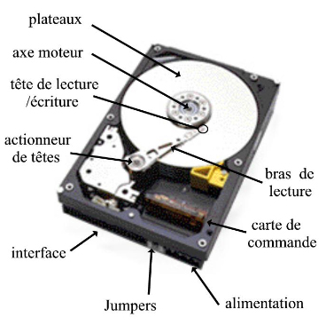
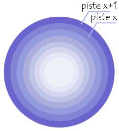

Le disque dur d'un ordinateur se compose d'un ensemble de plateaux circulaires coaxiaux, recouverts d'une couche de matériau magnétique qui permet l'enregistrement de données. Un disque dur ordinaire comporte un à huit plateaux tournant à plusieurs milliers de tours par minutes, ses têtes de lecture/écriture se déplaçant à la surface des plateaux sur un coussin d'air d'épaisseur comprise entre 0,2 et 0,5 µ. Les plateaux et le mécanisme de lecture sont enfermés dans une coque étanche qui les isole de la poussière ambiante, car la moindre petite particule peut venir détériorer l'état de surface du disque.

Les phases de lecture et écriture
Un ordinateur fonctionne de manière binaire, il faut donc stocker les données sous forme de 0 et de 1. Les têtes de lecture/écriture sont dites "inductives" : elles sont capables de générer un champ magnétique qui soit positif ou négatif permet de polariser la surface du disque en une très petite zone, ce qui se traduira lors du passage en lecture par des changements de polarité induisant un courant dans la tête qui sera ensuite transformer par un convertisseur analogique numérique (CAN) en 0 et en 1 compréhensibles par l'ordinateur.
Les têtes commencent à inscrire des données à la périphérie du disque (piste 0), puis avancent vers le centre. Les données sont organisées en cercles concentriques appelés pistes.

On appelle cylindre l'ensemble des données situées sur une même pistes et sur des plateaux différents : la figure géométrique formée représente un cylindre.
On appelle cluster la zone minimale que peut occuper un fichier sur le disque. En effet le système d'exploitation exploite des blocs qui sont en fait plusieurs secteurs (entre 1 et 16 secteurs).
Le mode 32 bits
Le mode 32 bits (par opposition au mode 16 bits) est caractérisé par un transfert des données sur 32 bits. En mode 16 bits, le transfert des données s'effectue sur 16 bits.
Le gain de performance relatif au passage du mode 16 bits au mode 32 bits (pour les disques durs) est généralement insignifiant. Quoi qu'il en soit il n'est la plupart du temps plus possible de choisir le mode, car la carte-mère détermine seule le type de mode à adopter en fonction du type de disque dur branché sur l'interface E-IDE.
Caractériser des disques
- Le taux de transfert est la quantité de données qui peuvent être lues ou écrites sur le disque en un temps donné. Il s'exprime aujourd'hui en Méga-Octets par seconde
- Le temps de latence (aussi appelé délai rotationnel) représente le temps entre lequel le disque a trouvé la piste et où il trouve les données.
- Le temps d'accès est le temps que met la tête pour aller d'une piste à la piste suivante (elle doit être la plus petite possible).
Hard Drive Mechanic, site sur le fonctionnement des disques durs - Tous droits réservés. Copyright Mentions LégalesContactez Site Créé par Sébastien BUNEL